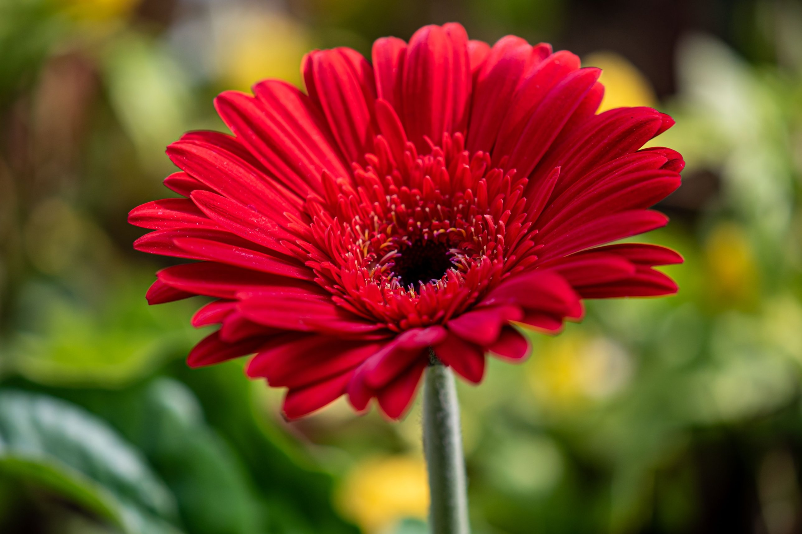
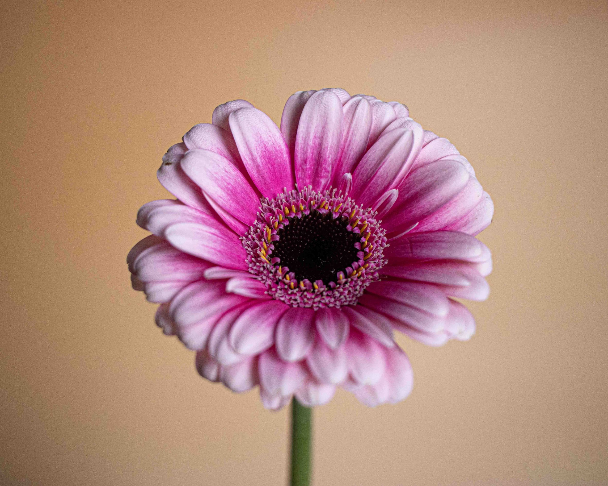
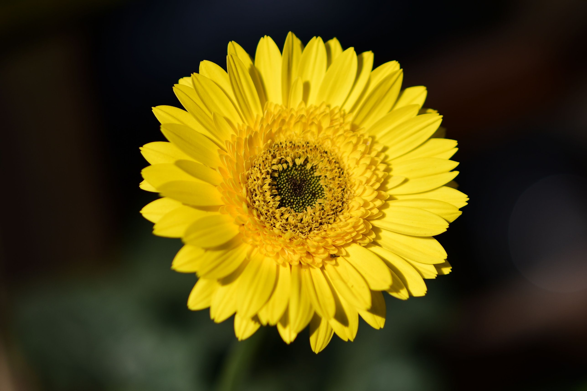
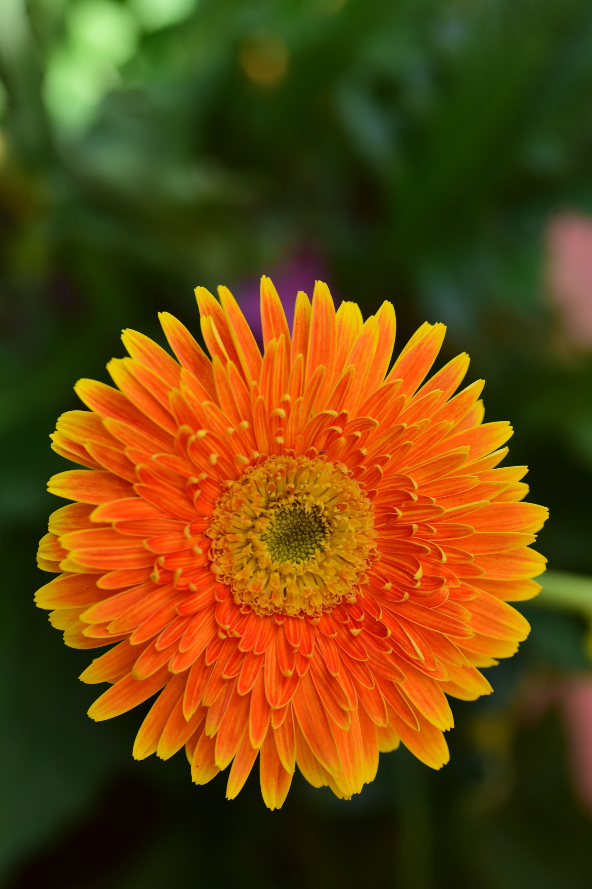
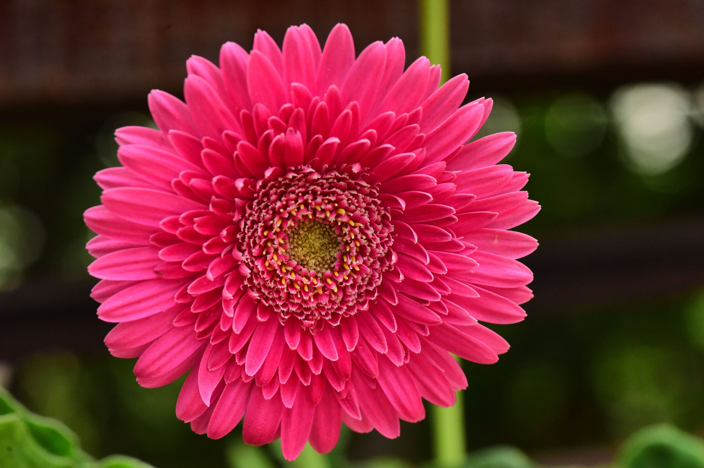

01Gerbera roja
Representa el amor, la pasión y los sentimientos profundos. Es una forma de demostrar cuánto significa alguien para nosotros.
Amor ❤️Cada flor tiene una manera especial de expresar lo que las palabras a veces no pueden decir.
Descubre su significado ↓Las gerberas son flores que representan la alegría, la belleza y los sentimientos positivos. Sus diferentes colores transmiten mensajes especiales.
Seis colores, seis maneras de expresar sentimientos.

01Representa el amor, la pasión y los sentimientos profundos. Es una forma de demostrar cuánto significa alguien para nosotros.
Amor ❤️
02Simboliza la ternura, la admiración y el cariño. Representa esos sentimientos sinceros que hacen especiales a las personas.
Ternura 💗
03Representa la felicidad, la amistad y el optimismo. Es como un pequeño rayo de sol que transmite alegría a quienes la reciben.
Alegría ☀️
04Simboliza la energía, el entusiasmo y la calidez. Representa la emoción de vivir momentos especiales y compartirlos.
Energía 🧡Representa la pureza, la sinceridad y los nuevos comienzos. Es símbolo de sentimientos honestos y tranquilidad.
Sinceridad 🤍
06Se relaciona con la admiración, la elegancia y el encanto. Es una flor intensa que transmite un sentimiento especial y diferente.
Admiración 💗No importa el color ni el tamaño de una flor. Lo verdaderamente especial es el sentimiento con el que se entrega.
“Las flores hablan el lenguaje del corazón”.